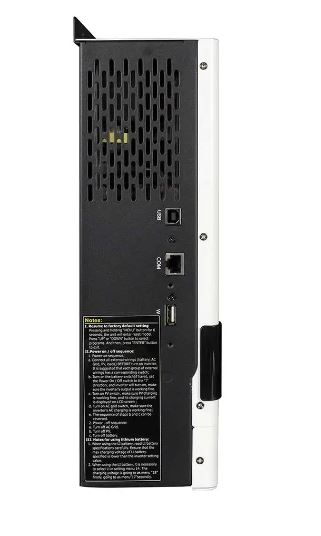
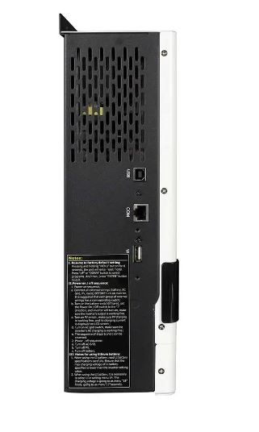
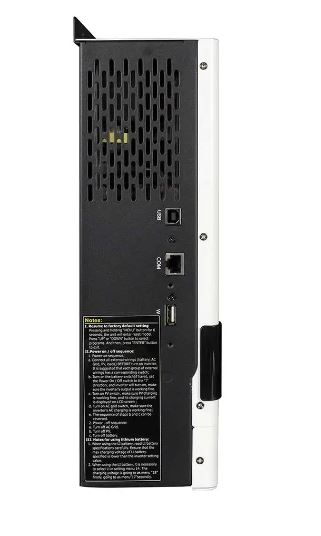
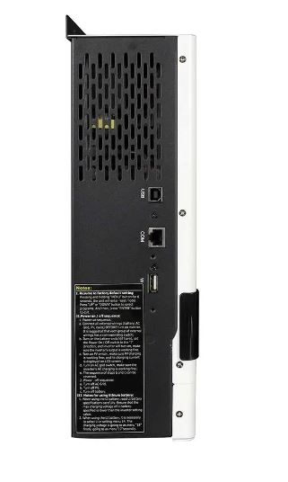

| Бренд | Must |
| Тип пристрою | Гібридний інвертор |
| Модель | PV18-1512VPM |
| Номінальна потужність | 1500 Вт |
| Пікова потужність | 3000 Вт |
| Вихідна напруга | 220-240 В |
| Частота виходу | 50/60 Гц (Авто) |
| Чиста синусоїда | Так |
| Ефективність перетворення | 90-93 % |
| Функція підмішування | Ні |
| Фази | 1 |
| Час перемикання | 10 мс |
| Вхідна напруга батареї | 12 В |
| Номінальна вхідна напруга | 12 В |
| Струм заряджання АС | 20 A |
| Максимальний струм заряджання АС + PV | 70 A |
| Максимальний струм заряджання PV | 60 A |
| Максимальна вхідна напруга PV | 15-130 В |
| Максимальна потужність панелей | 1000 Вт |
| Тип підтримуваних акумуляторів | LiFePO4, Li-ion, Lead-acid |
| WiFi/Bluetooth | Опціонально |
| Температура експлуатації | 0...55 °C |
| Вага | 6 кг |
| Габарити | 224х337х98 мм |
Це багатофункціональний інвертор/зарядний пристрій, що поєднує в собі функції інвертора, сонячного зарядного пристрою MPPT та зарядного пристрою для акумулятора, щоб забезпечити безперебійне живлення. Його зрозумілий РК-дисплей пропонує настроювані користувачем і легкодоступні кнопки, такі як зарядний струм акумулятора, пріоритет змінного/сонячного зарядного пристрою та прийнятну вхідну напругу на основі різних програм.
Інвертор можна підключити до ПК завантаживши програмне забезпечення та скориставшись кабелем зв’язку, який постачається з інвертором, щоб налаштувати інвертор через ПК або перевірити всі дані. Також за роботою інвертора може стежити за допомогою мобільного додатку, щоб мати змогу перевірити роботу в будь-який чам і будь-де.